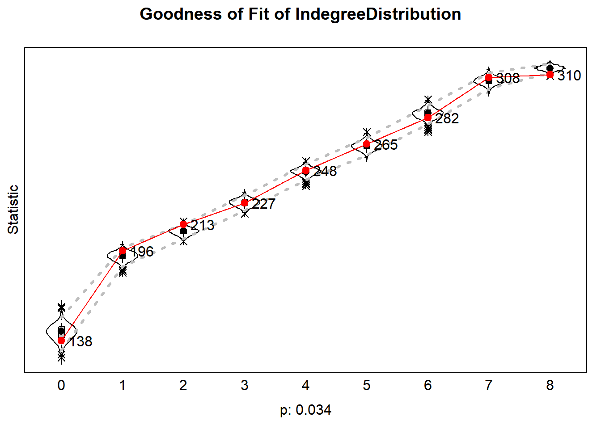
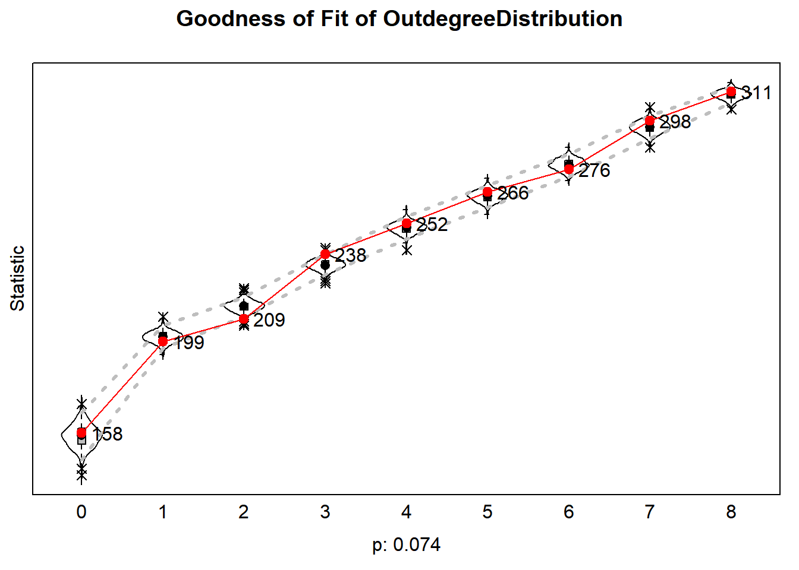
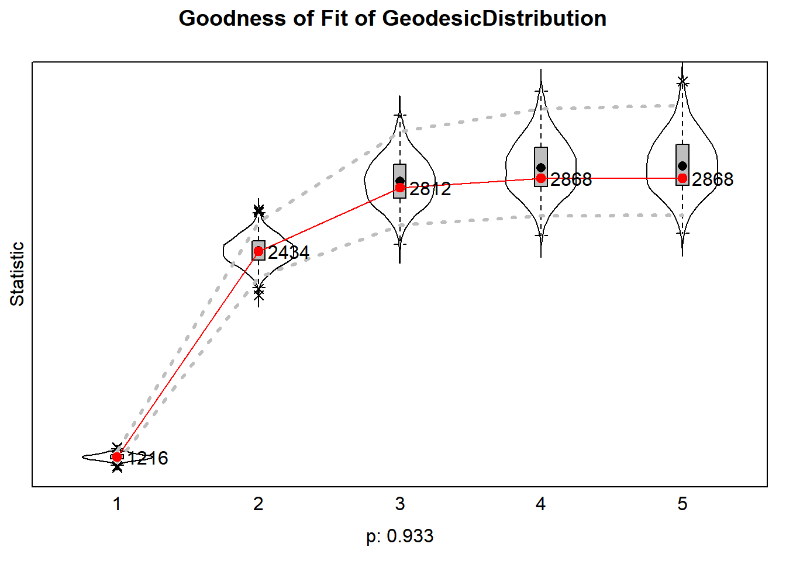

Let’s estimate the Stochastic Actor-Oriented Model (SAOM) implemented
in R as the Simulation Investigation for Empirical Network Analysis
(R-SIENA), developed by Snijders, Van de Bunt,
and Steglich (2010).
Preparation
Clean the working environment.
# clean the working environment
rm(list = ls())
We will:
- Read in our R-SIENA object list
- Inspect our data
- Define our effects
- Define our algorithm
- And estimate the SAOM
Below, we will follow these steps for club 1 (N=30). Here, we focus
on running frequency. We did the same procedure for the other clubs.
Step 1: Data
We read in the R-SIENA objects list
(clubdata_rsiena_freq.RData) and we grab club 1 (N=30). We take
as our network variable the kudos-network in which awarding/receiving
at least 1 kudos constitutes an i,j tie.
Our (dependent) behavioral variable is running frequency (in
times per week; ranging from 0 to 7+ times per week).
We included activity (frequency) in other sports (e.g., cycling
and swimming) as a time-varying covariate.
And we also included gender (men vs. women and others) as
constant covariate.
load("clubdata_rsiena_freq.Rdata") # load rsiena object list
mydata <- clubdata_rsiena_freq[[1]] # grab club 1
Step 2: Inspect data
We inspect the R-SIENA object
print01Report(mydata, modelname = "files/test")
A text file is printed in the working directory.
Step 3: Define effects
We are going to define our ‘myeff’ object containing the model
parameters. A list of all available effects for the given object can be
displayed in browser by requesting “effectsDocumentation(myeff)”. See
Ripley et al. (2021) for a substantial and
mathematical description of all effects.
We build increasingly complex models.
We include:
- structural network effects
- network selection effects
- covariate effects on network and behavior
dynamics
- network influence effects
We fix these effects to 0 and test them with the score-type test
Schweinberger (2012) (we test the
hypothesis that the parameter estimates are not 0, other than the model
assumes).
myeff <- getEffects(mydata)
# effectsDocumentation(myeff)
Structural network effects
First, we are going to include structural network effects, guided by
recommendations of Snijders (2020):
outdegree, reciprocity, and transitivity (GWESP).
We also add degree-related effects: indegree-popularity and
outdegree-activity (square-root versions).
We tested the out-Isolate effect (leading to not awarding kudos) and
this effect was not different from 0.
myeff1 <- includeEffects(myeff, gwespFF, name = "kudonet")
myeff1 <- includeEffects(myeff1, outActSqrt, inPopSqrt, name = "kudonet")
myeff1 <- setEffect(myeff1, outIso, name = "kudonet", fix = TRUE, test = FALSE, initialValue = 0)
Selection effects
Second, we include a selection effect with respect to behavior:
We use the higher-effect to control for aspirational tie-preferences
(indicated by a negative parameter estimate).
myeff2 <- setEffect(myeff1, higher, name = "kudonet", interaction1 = "freq_run")
Covariate effects
We include effects on tie changes of gender (monadic and dyadic).
myeff2 <- includeEffects(myeff2, egoX, altX, sameX, name = "kudonet", interaction1 = "gender")
We have selected a rather simple model to simulate kudos
tie-formation dynamics. Let’s estimate the model and assess the model’s
GOF to additional effects that were not directly modeled: the in- and
outdegree distribution and the geodesic distance distribution. We use
‘returnDeps=TRUE’ for keeping the simulated data (networks and
behavior), for subsequent GOF assesment. We save the GOF-diagnostics in
a list.
myalgorithm <- sienaAlgorithmCreate(projname = "test", nsub=5, n3=5000 )
# first, set the SAOM algorithm
ansM1 <- siena07(myalgorithm, data = mydata, effects = myeff2, # estimate the SAOM
batch = FALSE, verbose = FALSE, returnDeps = TRUE)
# calculate GOF diagnostics
gofi <- sienaGOF(ansM1,
IndegreeDistribution,
verbose = TRUE,
join = TRUE,
varName = "kudonet")
gofo <- sienaGOF(ansM1,
OutdegreeDistribution,
verbose = TRUE,
join = TRUE,
varName = "kudonet")
GeodesicDistribution <- function (i, data, sims, period, groupName,
varName, levls=c(1:5, Inf), cumulative=TRUE, ...) {
x <- networkExtraction(i, data, sims, period, groupName, varName)
require(sna)
a <- sna::geodist(symmetrize(x))$gdist
if (cumulative)
{
gdi <- sapply(levls, function(i){ sum(a<=i) })
}
else
{
gdi <- sapply(levls, function(i){ sum(a==i) })
}
names(gdi) <- as.character(levls)
gdi
}
gofgeo <- sienaGOF(ansM1,
GeodesicDistribution,
verbose = TRUE,
join = TRUE,
varName = "kudonet")
goflist <- list(gofi, gofo, gofgeo)
save(goflist, file= paste("files", "/", "test club 1", "/", "gof.RData", sep=""))
Indegree distribution
load("files/test club 1/gof.RData")
plot(goflist[[1]])

Outdegree distribution
plot(goflist[[2]])

Geodesic distance distribution
plot(goflist[[3]])
#> Note: some statistics are not plotted because their variance is 0.
#> This holds for the statistic: Inf.

GOF is acceptable!
For subsequent meta-analysis, we need to ensure that the model
specification for all our club-networks is identical. Some effects were
rather important in other clubs. We fix these to 0:
myeff2 <- setEffect(myeff2, outPopSqrt, name = "kudonet", fix = TRUE, test = FALSE, initialValue = 0)
myeff2 <- setEffect(myeff2, reciAct, name = "kudonet", fix = TRUE, test = FALSE, initialValue = 0)
myeff2 <- includeInteraction(myeff2, recip, gwespFF, parameter = 69, name = "kudonet")
eff1 <- myeff2[myeff2$include, ]$effect1[24]
eff2 <- myeff2[myeff2$include, ]$effect2[24]
myeff2 <- setEffect(myeff2, unspInt, fix = TRUE, test = FALSE, effect1 = eff1, effect2 = eff2)
We have modeled the dynamics of kudos tie formation. Now let’s model
dynamics in running behaviors.
Covariate effects
We start with effects on behavior changes of other variables.
- the interdependence between running frequency and other sports
frequency.
- gender on behavior
myeff3 <- includeEffects(myeff2, effFrom, name = "freq_run", interaction1 = "freq_other")
myeff3 <- includeEffects(myeff3, effFrom, name = "freq_run", interaction1 = "gender")
Influence effects
Last, we include effects of network position (indegree) and alter
behaviors (average alter/similarity, etc.) on behavior change. We make,
for each club, 6 model specifications. We save these effect objects in a
list.
- Model 1: base model + indegree effect on running
- Model 2: Model 1 + average alter effect
- Model 3: Model 1 + average attraction higher
- Model 4: Model 1 + average attraction lower
- Model 5: Model 1 + average attraction higher + lower
- Model 6: Model 1 + average similarity effect
We also fixed-and-tested the effect of outdegree on behavior, to rule
out possible confounding of the outdegree effect. Score-type test
indicated that outdegree-effects on behavior were 0 (not shown).
myeff0 <- myeff3 # model 0: base
myeff1 <- includeEffects(myeff0, indeg, name = "freq_run", interaction1 = "kudonet") # model 1: indegree
myeff2 <- includeEffects(myeff1, avAlt, name = "freq_run", interaction1 = "kudonet") # model 2: avAlt
myeff3 <- includeEffects(myeff1, avAttHigher, name = "freq_run", interaction1 = "kudonet") # model 3: avAttHigher
myeff4 <- includeEffects(myeff1, avAttLower, name = "freq_run", interaction1 = "kudonet") # model 4: avAttLower
myeff5 <- includeEffects(myeff3, avAttLower, name = "freq_run", interaction1 = "kudonet") # model 5: avAttHigher+Lower
myeff6 <- includeEffects(myeff1, avSim, name = "freq_run", interaction1 = "kudonet") # model 6: avSim
myeff <- list(myeff1, myeff2, myeff3, myeff4, myeff5, myeff6)
Step 4: Estimate the model
Let’s estimate these models. We rerun the models until adequate
convergence is reached. We store the sienaFit objects of these models in
a list, which we save later on. We use ‘returnDeps=TRUE’ for keeping the
simulated data (networks and behavior).
m=6 # models to estimate (indeg, avAlt, avAttHigher, avAttLower, avAttHigher+Lower, avSim)
# tweak the algorithm
myalgorithm <- sienaAlgorithmCreate(projname = "test", nsub=5, n3=3 )
# siena07( myalgorithm, data = mydata, effects = myeff[[j]], prevAns= sienaFit[[j]], returnDeps=TRUE, useCluster=TRUE, nbrNodes=10, initC=TRUE, batch=TRUE)
# we make a list for storing the RSiena fit objects
sienaFit <- list()
# for club i (here, 1) we run models j in 1:m
i = 1
for (j in 1:m) {
# we estimate the model
try <- 1
print(paste("Estimating model ", j, " for club 1", sep=""))
sienaFit[[j]] <- siena07(myalgorithm, data = mydata, effects = myeff[[j]], returnDeps=TRUE,
useCluster=TRUE, nbrNodes=10, initC=TRUE, batch=TRUE) # store it in the list
# re-run until we reach adequate convergence
while (TRUE){
if(sienaFit[[j]]$tconv.max >= .25){
try <- try + 1
if (try>30) {
print(paste("Now it lasted to long!")
break
}
print(paste("Model did not converge adequately (", sienaFit[[j]]$tconv.max, "); ", "Repeat the estimation (", "try ", try, ")", sep = ""))
sienaFit[[j]] <- siena07( myalgorithm, data = mydata, effects = myeff[[j]], prevAns= sienaFit[[j]], returnDeps=TRUE, useCluster=TRUE, nbrNodes=10, initC=TRUE, batch=TRUE)
}else{
print(paste("Reached overall maximum convergence ratio of: ", sienaFit[[j]]$tconv.max, sep = ""))
print("")
break
}
}
}
# and save the list with RSiena fit objects
save(sienaFit, file=paste("test", "/", "sienaFit", "/", "sienaFit_club", i, ".RData", sep = ""))
print(paste("All models are estimated for club ", i, ". Model results are stored in sienaFit_club", i, ".RData", sep=""))
}
sienaFit_clubL <- list()
for (i in 1:5) {
temp.space <- new.env()
bar <- load(paste("test/sienaFit/sienaFit_club", i, ".RData", sep=""), temp.space)
sienaFit_clubL[[i]] <- get(bar, temp.space)
rm(temp.space)
}
lapply(sienaFit_clubL, '[[', 5)
map(sienaFit_clubL, 6)
Because we are now modeling the evolution of both the network and the
attribute (running freq.), we will add an additional indicator to
evaluate GOF; namely, does the model capture the distribution of actors’
attribute levels over time?
gofbeh <- sienaGOF(sienaFit[[5]], BehaviorDistribution, levls = 0:7, verbose = TRUE, join = TRUE, varName = "freq_run")
save(gofbeh, file = paste("files", "/", "test club 1", "/", "gofbeh.RData", sep = ""))
load("files/test club 1/gofbeh.RData")
plot(gofbeh)
#> Note: some statistics are not plotted because their variance is 0.
#> This holds for the statistic: 7.

GOF is adequate for the distribution of running frequency values.
Next up
We will check whether this model configuration also converges for the
other
clubs. To summarize the results over our clubs, we will perform a meta-analysis
using a Fisher-type combination of one-tailed p-values.
References
Ripley, R. M., T. A. B. Snijders, Z. Boda, A. Vörös, and P. &
Preciado. 2021.
“Manual for RSIENA.” University of
Oxford, Department of Statistics, Nuffield College - (-): –.
http://www.stats.ox.ac.uk/~snijders/siena/RSiena_Manual.pdf.
Schweinberger, Michael. 2012.
“Statistical Modelling of Network
Panel Data: Goodness of Fit.” British Journal of Mathematical
and Statistical Psychology 65 (2): 263–81.
https://doi.org/10.1111/j.2044-8317.2011.02022.x.
Snijders, T. A. B. 2020.
“Statistical Methods for Social Network
Dynamics. A: Networks.” http://www.stats.ox.ac.uk/~snijders/siena/Siena_ModelSpec_s.pdf.
Snijders, T. A. B., G. G. Van de Bunt, and C. E. G. Steglich. 2010.
“Introduction to Stochastic Actor-Based Models for Network
Dynamics.” Social Networks 32 (1): 44–60.
http://www.sciencedirect.com/science/article/pii/S0378873309000069.
LS0tDQp0aXRsZTogIlNBT006IE1vZGVsIHNlbGVjdGlvbiINCmRhdGU6ICJMYXN0IGNvbXBpbGVkIG9uIGByIGZvcm1hdChTeXMudGltZSgpLCAnJUIsICVZJylgIg0KYmlibGlvZ3JhcGh5OiByZWZlcmVuY2VzLmJpYg0Kb3V0cHV0Og0KICBodG1sX2RvY3VtZW50Og0KICAgIGNzczogdHdlYWtzLmNzcw0KICAgIHRvYzogdHJ1ZQ0KICAgIHRvY19mbG9hdDogdHJ1ZQ0KICAgIGNvbGxhcHNlZDogZmFsc2UNCiAgICBudW1iZXJfc2VjdGlvbnM6IGZhbHNlDQogICAgdG9jX2RlcHRoOiAxDQogICAgY29kZV9mb2xkaW5nOiBzaG93DQogICAgY29kZV9kb3dubG9hZDogeWVzDQotLS0NCiAgDQpgYGB7ciwgZ2xvYmFsc2V0dGluZ3MsIGVjaG89RkFMU0UsIHdhcm5pbmc9RkFMU0UsIHJlc3VsdHM9J2hpZGUnfQ0KbGlicmFyeShrbml0cikNCmxpYnJhcnkoUlNpZW5hKQ0KbGlicmFyeShnZ3Bsb3QyKQ0Ka25pdHI6Om9wdHNfY2h1bmskc2V0KGVjaG8gPSBUUlVFKQ0Kb3B0c19jaHVuayRzZXQodGlkeS5vcHRzPWxpc3Qod2lkdGguY3V0b2ZmPTEwMCksdGlkeT1UUlVFLCB3YXJuaW5nID0gRkFMU0UsIG1lc3NhZ2UgPSBGQUxTRSxjb21tZW50ID0gIiM+IiwgY2FjaGU9VFJVRSwgY2xhc3Muc291cmNlPWMoInRlc3QiKSwgY2xhc3Mub3V0cHV0PWMoInRlc3QyIikpDQpvcHRpb25zKHdpZHRoID0gMTAwKQ0KcmdsOjpzZXR1cEtuaXRyKCkNCg0KY29sb3JpemUgPC0gZnVuY3Rpb24oeCwgY29sb3IpIHtzcHJpbnRmKCI8c3BhbiBzdHlsZT0nY29sb3I6ICVzOyc+JXM8L3NwYW4+IiwgY29sb3IsIHgpIH0NCg0KYGBgDQoNCmBgYHtyIGtsaXBweSwgZWNobz1GQUxTRSwgaW5jbHVkZT1UUlVFfQ0Ka2xpcHB5OjprbGlwcHkocG9zaXRpb24gPSBjKCd0b3AnLCAncmlnaHQnKSkNCiNrbGlwcHk6OmtsaXBweShjb2xvciA9ICdkYXJrcmVkJykNCiNrbGlwcHk6OmtsaXBweSh0b29sdGlwX21lc3NhZ2UgPSAnQ2xpY2sgdG8gY29weScsIHRvb2x0aXBfc3VjY2VzcyA9ICdEb25lJykNCmBgYA0KDQoNCg0KLS0tDQogIA0KTGV0J3MgZXN0aW1hdGUgdGhlIFN0b2NoYXN0aWMgQWN0b3ItT3JpZW50ZWQgTW9kZWwgKFNBT00pIGltcGxlbWVudGVkIGluIFIgYXMgdGhlIFNpbXVsYXRpb24gSW52ZXN0aWdhdGlvbiBmb3IgRW1waXJpY2FsIE5ldHdvcmsgQW5hbHlzaXMgKFItU0lFTkEpLCBkZXZlbG9wZWQgYnkgQHNuaWpkZXJzMjAxMC4NCg0KLS0tLQ0KDQo8YnI+DQoNCg0KIyBQcmVwYXJhdGlvbg0KDQpDbGVhbiB0aGUgd29ya2luZyBlbnZpcm9ubWVudC4NCg0KYGBge3IsIGF0dHIub3V0cHV0PSdzdHlsZT0ibWF4LWhlaWdodDogMjAwcHg7Iid9DQojIGNsZWFuIHRoZSB3b3JraW5nIGVudmlyb25tZW50IA0Kcm0gKGxpc3QgPSBscyggKSkNCmBgYA0KDQo8YnI+IA0KDQpXZSB3aWxsOg0KDQoxLiBSZWFkIGluIG91ciBSLVNJRU5BIG9iamVjdCBsaXN0DQoyLiBJbnNwZWN0IG91ciBkYXRhDQozLiBEZWZpbmUgb3VyIGVmZmVjdHMNCjQuIERlZmluZSBvdXIgYWxnb3JpdGhtDQo1LiBBbmQgZXN0aW1hdGUgdGhlIFNBT00NCg0KQmVsb3csIHdlIHdpbGwgZm9sbG93IHRoZXNlIHN0ZXBzIGZvciBjbHViIDEgKE49MzApLiBIZXJlLCB3ZSBmb2N1cyBvbiBydW5uaW5nIGZyZXF1ZW5jeS4gV2UgZGlkIHRoZSBzYW1lIHByb2NlZHVyZSBmb3IgdGhlIG90aGVyIGNsdWJzLg0KDQo8YnI+DQoNCi0tLS0NCg0KDQojIFN0ZXAgMTogRGF0YQ0KDQpXZSByZWFkIGluIHRoZSBSLVNJRU5BIG9iamVjdHMgbGlzdCAoKmNsdWJkYXRhX3JzaWVuYV9mcmVxLlJEYXRhKikgYW5kIHdlIGdyYWIgY2x1YiAxIChOPTMwKS4gV2UgdGFrZSBhcyBvdXIgbmV0d29yayB2YXJpYWJsZSB0aGUga3Vkb3MtbmV0d29yayBpbiB3aGljaCBhd2FyZGluZy9yZWNlaXZpbmcgKmF0IGxlYXN0KiAxIGt1ZG9zIGNvbnN0aXR1dGVzIGFuICppLGoqIHRpZS4gDQoNCi0gT3VyIChkZXBlbmRlbnQpIGJlaGF2aW9yYWwgdmFyaWFibGUgaXMgcnVubmluZyBmcmVxdWVuY3kgKGluIHRpbWVzIHBlciB3ZWVrOyByYW5naW5nIGZyb20gMCB0byA3KyB0aW1lcyBwZXIgd2VlaykuDQoNCi0gV2UgaW5jbHVkZWQgYWN0aXZpdHkgKGZyZXF1ZW5jeSkgaW4gb3RoZXIgc3BvcnRzIChlLmcuLCBjeWNsaW5nIGFuZCBzd2ltbWluZykgYXMgYSB0aW1lLXZhcnlpbmcgY292YXJpYXRlLg0KDQotIEFuZCB3ZSBhbHNvIGluY2x1ZGVkIGdlbmRlciAobWVuIHZzLiB3b21lbiBhbmQgb3RoZXJzKSBhcyBjb25zdGFudCBjb3ZhcmlhdGUuDQoNCg0KYGBge3J9DQpsb2FkKCJjbHViZGF0YV9yc2llbmFfZnJlcS5SZGF0YSIpICMgbG9hZCByc2llbmEgb2JqZWN0IGxpc3QNCm15ZGF0YSA8LSBjbHViZGF0YV9yc2llbmFfZnJlcVtbMV1dICMgZ3JhYiBjbHViIDENCmBgYA0KDQo8YnI+DQoNCi0tLS0NCg0KDQojIFN0ZXAgMjogSW5zcGVjdCBkYXRhDQoNCldlIGluc3BlY3QgdGhlIFItU0lFTkEgb2JqZWN0DQoNCmBgYHtyIGV2YWw9Rn0NCnByaW50MDFSZXBvcnQobXlkYXRhLCBtb2RlbG5hbWU9ImZpbGVzL3Rlc3QiKQ0KYGBgDQoNCkEgdGV4dCBmaWxlIGlzIHByaW50ZWQgaW4gdGhlIHdvcmtpbmcgZGlyZWN0b3J5Lg0KDQohW10oZmlsZXMvdGVzdC50eHQpeyNpZCAuY2xhc3Mgd2lkdGg9MTAwJSBoZWlnaHQ9MjAwcHh9DQoNCi0tLS0NCg0KPGJyPg0KDQojIFN0ZXAgMzogRGVmaW5lIGVmZmVjdHMNCldlIGFyZSBnb2luZyB0byBkZWZpbmUgb3VyICdteWVmZicgb2JqZWN0IGNvbnRhaW5pbmcgdGhlIG1vZGVsIHBhcmFtZXRlcnMuIEEgbGlzdCBvZiBhbGwgYXZhaWxhYmxlIGVmZmVjdHMgZm9yIHRoZSBnaXZlbiBvYmplY3QgY2FuIGJlIGRpc3BsYXllZCBpbiBicm93c2VyIGJ5IHJlcXVlc3RpbmcgImVmZmVjdHNEb2N1bWVudGF0aW9uKG15ZWZmKSIuIFNlZSBAcnNpZW5hbWFudWFsIGZvciBhIHN1YnN0YW50aWFsIGFuZCBtYXRoZW1hdGljYWwgZGVzY3JpcHRpb24gb2YgYWxsIGVmZmVjdHMuDQoNCldlIGJ1aWxkIGluY3JlYXNpbmdseSBjb21wbGV4IG1vZGVscy4NCg0KV2UgaW5jbHVkZToNCg0KMS4gW3N0cnVjdHVyYWwgbmV0d29yayBlZmZlY3RzXSgjc3RyKQ0KMi4gW25ldHdvcmsgc2VsZWN0aW9uIGVmZmVjdHNdKCNzZWwpDQozLiBbY292YXJpYXRlIGVmZmVjdHNdKCNjbykgb24gbmV0d29yayBhbmQgYmVoYXZpb3IgZHluYW1pY3MNCjQuIFtuZXR3b3JrIGluZmx1ZW5jZSBlZmZlY3RzXSgjaW5mKQ0KDQpXZSBmaXggdGhlc2UgZWZmZWN0cyB0byAwIGFuZCB0ZXN0IHRoZW0gd2l0aCB0aGUgc2NvcmUtdHlwZSB0ZXN0IEBTY2h3ZWluYmVyZ2VyMjAxMiAod2UgdGVzdCB0aGUgaHlwb3RoZXNpcyB0aGF0IHRoZSBwYXJhbWV0ZXIgZXN0aW1hdGVzIGFyZSBub3QgMCwgb3RoZXIgdGhhbiB0aGUgbW9kZWwgYXNzdW1lcykuDQoNCg0KYGBge3IgZWNobz1ULCByZXN1bHRzPSdoaWRlJ30NCm15ZWZmIDwtIGdldEVmZmVjdHMobXlkYXRhKQ0KI2VmZmVjdHNEb2N1bWVudGF0aW9uKG15ZWZmKQ0KYGBgDQoNCg0KPGJyPg0KDQojIyBTdHJ1Y3R1cmFsIG5ldHdvcmsgZWZmZWN0cyB7I3N0cn0NCkZpcnN0LCB3ZSBhcmUgZ29pbmcgdG8gaW5jbHVkZSBzdHJ1Y3R1cmFsIG5ldHdvcmsgZWZmZWN0cywgZ3VpZGVkIGJ5IHJlY29tbWVuZGF0aW9ucyBvZiBAc25pamRlcnNwcmVzOiBvdXRkZWdyZWUsIHJlY2lwcm9jaXR5LCBhbmQgdHJhbnNpdGl2aXR5IChHV0VTUCkuDQoNCldlIGFsc28gYWRkIGRlZ3JlZS1yZWxhdGVkIGVmZmVjdHM6IGluZGVncmVlLXBvcHVsYXJpdHkgYW5kIG91dGRlZ3JlZS1hY3Rpdml0eSAoc3F1YXJlLXJvb3QgdmVyc2lvbnMpLg0KDQpXZSB0ZXN0ZWQgdGhlIG91dC1Jc29sYXRlIGVmZmVjdCAobGVhZGluZyB0byBub3QgYXdhcmRpbmcga3Vkb3MpIGFuZCB0aGlzIGVmZmVjdCB3YXMgbm90IGRpZmZlcmVudCBmcm9tIDAuIA0KDQpgYGB7ciBlY2hvPVQsIHJlc3VsdHM9J2hpZGUnfQ0KbXllZmYxIDwtIGluY2x1ZGVFZmZlY3RzKG15ZWZmLCBnd2VzcEZGLCBuYW1lID0gImt1ZG9uZXQiKSANCm15ZWZmMSA8LSBpbmNsdWRlRWZmZWN0cyhteWVmZjEsIG91dEFjdFNxcnQsIGluUG9wU3FydCwgbmFtZSA9ICJrdWRvbmV0IikgDQpteWVmZjEgPC0gc2V0RWZmZWN0KCBteWVmZjEsIG91dElzbywgbmFtZSA9ICJrdWRvbmV0IiwgZml4ID0gVFJVRSwgdGVzdCA9IEZBTFNFLCBpbml0aWFsVmFsdWUgPSAwKQ0KYGBgDQoNCg0KPGJyPg0KDQojIyBTZWxlY3Rpb24gZWZmZWN0cyB7I3NlbH0NClNlY29uZCwgd2UgaW5jbHVkZSBhIHNlbGVjdGlvbiBlZmZlY3Qgd2l0aCByZXNwZWN0IHRvIGJlaGF2aW9yOg0KDQpXZSB1c2UgdGhlIGhpZ2hlci1lZmZlY3QgdG8gY29udHJvbCBmb3IgYXNwaXJhdGlvbmFsIHRpZS1wcmVmZXJlbmNlcyAoaW5kaWNhdGVkIGJ5IGEgbmVnYXRpdmUgcGFyYW1ldGVyIGVzdGltYXRlKS4NCg0KYGBge3IgZWNobz1ULCByZXN1bHRzPSdoaWRlJ30NCm15ZWZmMiA8LSBzZXRFZmZlY3QobXllZmYxLCBoaWdoZXIsIG5hbWUgPSAia3Vkb25ldCIsIGludGVyYWN0aW9uMSA9ICJmcmVxX3J1biIpDQpgYGANCg0KDQo8YnI+DQogIA0KIyMgQ292YXJpYXRlIGVmZmVjdHMgeyNjb30NCiAgDQpXZSBpbmNsdWRlIGVmZmVjdHMgb24gdGllIGNoYW5nZXMgb2YgZ2VuZGVyIChtb25hZGljIGFuZCBkeWFkaWMpLg0KDQpgYGB7ciBlY2hvPVQsIHJlc3VsdHM9J2hpZGUnfQ0KbXllZmYyIDwtIGluY2x1ZGVFZmZlY3RzKG15ZWZmMiwgZWdvWCwgYWx0WCwgc2FtZVgsIG5hbWU9Imt1ZG9uZXQiLCBpbnRlcmFjdGlvbjEgPSAiZ2VuZGVyIiApDQpgYGANCg0KICANCjxicj4gDQogIA0KV2UgaGF2ZSBzZWxlY3RlZCBhIHJhdGhlciBzaW1wbGUgbW9kZWwgdG8gc2ltdWxhdGUga3Vkb3MgdGllLWZvcm1hdGlvbiBkeW5hbWljcy4gTGV0J3MgZXN0aW1hdGUgdGhlIG1vZGVsIGFuZCBhc3Nlc3MgdGhlIG1vZGVsJ3MgR09GIHRvIGFkZGl0aW9uYWwgZWZmZWN0cyB0aGF0IHdlcmUgbm90IGRpcmVjdGx5IG1vZGVsZWQ6IHRoZSBpbi0gYW5kIG91dGRlZ3JlZSBkaXN0cmlidXRpb24gYW5kIHRoZSBnZW9kZXNpYyBkaXN0YW5jZSBkaXN0cmlidXRpb24uIFdlIHVzZSAncmV0dXJuRGVwcz1UUlVFJyBmb3Iga2VlcGluZyB0aGUgc2ltdWxhdGVkIGRhdGEgKG5ldHdvcmtzIGFuZCBiZWhhdmlvciksIGZvciBzdWJzZXF1ZW50IEdPRiBhc3Nlc21lbnQuIFdlIHNhdmUgdGhlIEdPRi1kaWFnbm9zdGljcyBpbiBhIGxpc3QuDQoNCmBgYHtyIGV2YWw9RiwgcmVzdWx0cz0naGlkZSd9DQpteWFsZ29yaXRobSA8LSBzaWVuYUFsZ29yaXRobUNyZWF0ZShwcm9qbmFtZSA9ICJ0ZXN0IiwgbnN1Yj01LCBuMz01MDAwICkNCiAjIGZpcnN0LCBzZXQgdGhlIFNBT00gYWxnb3JpdGhtIA0KDQphbnNNMSA8LSBzaWVuYTA3KG15YWxnb3JpdGhtLCBkYXRhID0gbXlkYXRhLCBlZmZlY3RzID0gbXllZmYyLCAjIGVzdGltYXRlIHRoZSBTQU9NDQogICAgICAgICAgICAgICAgIGJhdGNoID0gRkFMU0UsIHZlcmJvc2UgPSBGQUxTRSwgcmV0dXJuRGVwcyA9IFRSVUUpDQoNCiMgY2FsY3VsYXRlIEdPRiBkaWFnbm9zdGljcw0KZ29maSA8LSBzaWVuYUdPRihhbnNNMSwgDQogICAgICAgICAgICAgICAgIEluZGVncmVlRGlzdHJpYnV0aW9uLCANCiAgICAgICAgICAgICAgICAgdmVyYm9zZSA9IFRSVUUsDQogICAgICAgICAgICAgICAgIGpvaW4gPSBUUlVFLCANCiAgICAgICAgICAgICAgICAgdmFyTmFtZSA9ICJrdWRvbmV0IikNCg0KZ29mbyA8LSBzaWVuYUdPRihhbnNNMSwgDQogICAgICAgICAgICAgICAgIE91dGRlZ3JlZURpc3RyaWJ1dGlvbiwgDQogICAgICAgICAgICAgICAgIHZlcmJvc2UgPSBUUlVFLA0KICAgICAgICAgICAgICAgICBqb2luID0gVFJVRSwgDQogICAgICAgICAgICAgICAgIHZhck5hbWUgPSAia3Vkb25ldCIpDQoNCkdlb2Rlc2ljRGlzdHJpYnV0aW9uIDwtIGZ1bmN0aW9uIChpLCBkYXRhLCBzaW1zLCBwZXJpb2QsIGdyb3VwTmFtZSwNCiAgIHZhck5hbWUsIGxldmxzPWMoMTo1LCBJbmYpLCBjdW11bGF0aXZlPVRSVUUsIC4uLikgew0KICAgICB4IDwtIG5ldHdvcmtFeHRyYWN0aW9uKGksIGRhdGEsIHNpbXMsIHBlcmlvZCwgZ3JvdXBOYW1lLCB2YXJOYW1lKQ0KICAgICByZXF1aXJlKHNuYSkNCiAgICAgYSA8LSBzbmE6Omdlb2Rpc3Qoc3ltbWV0cml6ZSh4KSkkZ2Rpc3QNCiAgICAgaWYgKGN1bXVsYXRpdmUpDQogICAgIHsNCiAgICAgICBnZGkgPC0gc2FwcGx5KGxldmxzLCBmdW5jdGlvbihpKXsgc3VtKGE8PWkpIH0pDQogICAgIH0NCiAgICAgZWxzZQ0KICAgICB7DQogICAgICAgZ2RpIDwtIHNhcHBseShsZXZscywgZnVuY3Rpb24oaSl7IHN1bShhPT1pKSB9KQ0KICAgICB9DQogICAgIG5hbWVzKGdkaSkgPC0gYXMuY2hhcmFjdGVyKGxldmxzKQ0KICAgICBnZGkNCn0NCg0KZ29mZ2VvIDwtIHNpZW5hR09GKGFuc00xLCANCiAgICAgICAgICAgICAgICAgR2VvZGVzaWNEaXN0cmlidXRpb24sIA0KICAgICAgICAgICAgICAgICB2ZXJib3NlID0gVFJVRSwNCiAgICAgICAgICAgICAgICAgam9pbiA9IFRSVUUsIA0KICAgICAgICAgICAgICAgICB2YXJOYW1lID0gImt1ZG9uZXQiKQ0KDQpnb2ZsaXN0IDwtIGxpc3QoZ29maSwgZ29mbywgZ29mZ2VvKQ0Kc2F2ZShnb2ZsaXN0LCBmaWxlPSBwYXN0ZSgiZmlsZXMiLCAiLyIsICJ0ZXN0IGNsdWIgMSIsICIvIiwgImdvZi5SRGF0YSIsIHNlcD0iIikpDQpgYGANCg0KIyMjIHsudGFic2V0IC50YWJzZXQtZmFkZX0NCg0KIyMjIyBJbmRlZ3JlZSBkaXN0cmlidXRpb24NCmBgYHtyIGNsYXNzLnNvdXJjZSA9ICdmb2xkLWhpZGUnfQ0KbG9hZCgiZmlsZXMvdGVzdCBjbHViIDEvZ29mLlJEYXRhIikNCnBsb3QoZ29mbGlzdFtbMV1dKQ0KYGBgDQoNCiMjIyMgT3V0ZGVncmVlIGRpc3RyaWJ1dGlvbg0KYGBge3IgY2xhc3Muc291cmNlID0gJ2ZvbGQtaGlkZSd9DQpwbG90KGdvZmxpc3RbWzJdXSkNCmBgYA0KDQojIyMjIEdlb2Rlc2ljIGRpc3RhbmNlIGRpc3RyaWJ1dGlvbg0KYGBge3IgY2xhc3Muc291cmNlID0gJ2ZvbGQtaGlkZSd9DQpwbG90KGdvZmxpc3RbWzNdXSkNCmBgYA0KDQoNCiMjIyB7LX0NCg0KR09GIGlzIGFjY2VwdGFibGUhDQoNCjxicj4NCg0KRm9yIHN1YnNlcXVlbnQgbWV0YS1hbmFseXNpcywgd2UgbmVlZCB0byBlbnN1cmUgdGhhdCB0aGUgbW9kZWwgc3BlY2lmaWNhdGlvbiBmb3IgYWxsIG91ciBjbHViLW5ldHdvcmtzIGlzIGlkZW50aWNhbC4gU29tZSBlZmZlY3RzIHdlcmUgcmF0aGVyIGltcG9ydGFudCBpbiBvdGhlciBjbHVicy4gV2UgZml4IHRoZXNlIHRvIDA6DQoNCmBgYHtyIGV2YWw9RiwgcmVzdWx0cz0naGlkZSd9DQpteWVmZjIgPC0gc2V0RWZmZWN0KCBteWVmZjIsIG91dFBvcFNxcnQsIG5hbWUgPSAia3Vkb25ldCIsIGZpeCA9IFRSVUUsIHRlc3QgPSBGQUxTRSwgaW5pdGlhbFZhbHVlID0gMCkNCm15ZWZmMiA8LSBzZXRFZmZlY3QoIG15ZWZmMiwgcmVjaUFjdCwgbmFtZSA9ICJrdWRvbmV0IiwgZml4ID0gVFJVRSwgdGVzdCA9IEZBTFNFLCBpbml0aWFsVmFsdWUgPSAwKQ0KbXllZmYyIDwtIGluY2x1ZGVJbnRlcmFjdGlvbihteWVmZjIsIHJlY2lwLCBnd2VzcEZGLCBwYXJhbWV0ZXIgPSA2OSwgbmFtZSA9ICJrdWRvbmV0IikNCmVmZjEgPC0gbXllZmYyW215ZWZmMiRpbmNsdWRlLF0kZWZmZWN0MVsyNF0NCmVmZjIgPC0gbXllZmYyW215ZWZmMiRpbmNsdWRlLF0kZWZmZWN0MlsyNF0NCm15ZWZmMiA8LSBzZXRFZmZlY3QobXllZmYyLCB1bnNwSW50LCBmaXg9VFJVRSwgdGVzdD1GQUxTRSwgZWZmZWN0MT1lZmYxLCBlZmZlY3QyPWVmZjIpDQpgYGANCg0KPCEtLS0gDQoNCkBSRjogZm9yIHNvbWUgcmVhc29ucyB0aGlzIGdpdmVzIGFuIGVycm9yIHdoZW4gcmVuZGVyaW5nIHRoZSBzaXRlLi4uIHNvIHNldCBvbiBldmFsPUYNCg0KLS0tPiANCg0KPGJyPg0KDQotLS0tDQoNCldlIGhhdmUgbW9kZWxlZCB0aGUgZHluYW1pY3Mgb2Yga3Vkb3MgdGllIGZvcm1hdGlvbi4gTm93IGxldCdzIG1vZGVsIGR5bmFtaWNzIGluIHJ1bm5pbmcgYmVoYXZpb3JzLg0KDQojIyBDb3ZhcmlhdGUgZWZmZWN0cw0KV2Ugc3RhcnQgd2l0aCBlZmZlY3RzIG9uIGJlaGF2aW9yIGNoYW5nZXMgb2Ygb3RoZXIgdmFyaWFibGVzLg0KDQotIHRoZSBpbnRlcmRlcGVuZGVuY2UgYmV0d2VlbiBydW5uaW5nIGZyZXF1ZW5jeSBhbmQgb3RoZXIgc3BvcnRzIGZyZXF1ZW5jeS4NCi0gZ2VuZGVyIG9uIGJlaGF2aW9yDQogIA0KYGBge3IgZWNobz1ULCByZXN1bHRzPSdoaWRlJ30NCm15ZWZmMyA8LSBpbmNsdWRlRWZmZWN0cyhteWVmZjIsIGVmZkZyb20sIG5hbWUgPSAiZnJlcV9ydW4iLCBpbnRlcmFjdGlvbjEgPSAiZnJlcV9vdGhlciIpDQpteWVmZjMgPC0gaW5jbHVkZUVmZmVjdHMobXllZmYzLCBlZmZGcm9tLCBuYW1lID0gImZyZXFfcnVuIiwgaW50ZXJhY3Rpb24xID0gImdlbmRlciIpDQpgYGANCiAgDQo8YnI+DQoNCi0tLS0NCiAgDQojIyBJbmZsdWVuY2UgZWZmZWN0cyB7I2luZn0NCkxhc3QsIHdlIGluY2x1ZGUgZWZmZWN0cyBvZiBuZXR3b3JrIHBvc2l0aW9uIChpbmRlZ3JlZSkgYW5kIGFsdGVyIGJlaGF2aW9ycyAoYXZlcmFnZSBhbHRlci9zaW1pbGFyaXR5LCBldGMuKSBvbiBiZWhhdmlvciBjaGFuZ2UuDQpXZSBtYWtlLCBmb3IgZWFjaCBjbHViLCA2IG1vZGVsIHNwZWNpZmljYXRpb25zLiBXZSBzYXZlIHRoZXNlIGVmZmVjdCBvYmplY3RzIGluIGEgbGlzdC4NCg0KLSBNb2RlbCAxOiBiYXNlIG1vZGVsICsgaW5kZWdyZWUgZWZmZWN0IG9uIHJ1bm5pbmcNCi0gTW9kZWwgMjogTW9kZWwgMSArIGF2ZXJhZ2UgYWx0ZXIgZWZmZWN0DQotIE1vZGVsIDM6IE1vZGVsIDEgKyBhdmVyYWdlIGF0dHJhY3Rpb24gaGlnaGVyDQotIE1vZGVsIDQ6IE1vZGVsIDEgKyBhdmVyYWdlIGF0dHJhY3Rpb24gbG93ZXINCi0gTW9kZWwgNTogTW9kZWwgMSArIGF2ZXJhZ2UgYXR0cmFjdGlvbiBoaWdoZXIgKyBsb3dlcg0KLSBNb2RlbCA2OiBNb2RlbCAxICsgYXZlcmFnZSBzaW1pbGFyaXR5IGVmZmVjdA0KDQpXZSBhbHNvIGZpeGVkLWFuZC10ZXN0ZWQgdGhlIGVmZmVjdCBvZiBvdXRkZWdyZWUgb24gYmVoYXZpb3IsIHRvIHJ1bGUgb3V0IHBvc3NpYmxlIGNvbmZvdW5kaW5nIG9mIHRoZSBvdXRkZWdyZWUgZWZmZWN0LiBTY29yZS10eXBlIHRlc3QgaW5kaWNhdGVkIHRoYXQgb3V0ZGVncmVlLWVmZmVjdHMgb24gYmVoYXZpb3Igd2VyZSAwIChub3Qgc2hvd24pLiANCg0KDQpgYGB7ciBlY2hvPVQsIHJlc3VsdHM9J2hpZGUnfQ0KbXllZmYwIDwtIG15ZWZmMyAgICAgICAgICAgICAgICAgICAgICAgICAgICAgICAgICAgICAgICAgICAgICAgICAgICAgICAgICAgICAgICAgICAgICAgICAgICAjIG1vZGVsIDA6IGJhc2UNCm15ZWZmMSA8LSBpbmNsdWRlRWZmZWN0cyhteWVmZjAsIGluZGVnLCBuYW1lID0gImZyZXFfcnVuIiwgaW50ZXJhY3Rpb24xID0gImt1ZG9uZXQiKSAgICAgICAgIyBtb2RlbCAxOiBpbmRlZ3JlZQ0KbXllZmYyIDwtIGluY2x1ZGVFZmZlY3RzKG15ZWZmMSwgYXZBbHQsIG5hbWUgPSAiZnJlcV9ydW4iLCBpbnRlcmFjdGlvbjEgPSAia3Vkb25ldCIpICAgICAgICAjIG1vZGVsIDI6IGF2QWx0DQpteWVmZjMgPC0gaW5jbHVkZUVmZmVjdHMobXllZmYxLCBhdkF0dEhpZ2hlciwgbmFtZSA9ICJmcmVxX3J1biIsIGludGVyYWN0aW9uMSA9ICJrdWRvbmV0IikgICMgbW9kZWwgMzogYXZBdHRIaWdoZXINCm15ZWZmNCA8LSBpbmNsdWRlRWZmZWN0cyhteWVmZjEsIGF2QXR0TG93ZXIsIG5hbWUgPSAiZnJlcV9ydW4iLCBpbnRlcmFjdGlvbjEgPSAia3Vkb25ldCIpICAgIyBtb2RlbCA0OiBhdkF0dExvd2VyDQpteWVmZjUgPC0gaW5jbHVkZUVmZmVjdHMobXllZmYzLCBhdkF0dExvd2VyLCBuYW1lID0gImZyZXFfcnVuIiwgaW50ZXJhY3Rpb24xID0gImt1ZG9uZXQiKSAgICMgbW9kZWwgNTogYXZBdHRIaWdoZXIrTG93ZXINCm15ZWZmNiA8LSBpbmNsdWRlRWZmZWN0cyhteWVmZjEsIGF2U2ltLCBuYW1lID0gImZyZXFfcnVuIiwgaW50ZXJhY3Rpb24xID0gImt1ZG9uZXQiKSAgICAgICAgIyBtb2RlbCA2OiBhdlNpbQ0KDQpteWVmZiA8LSBsaXN0KG15ZWZmMSwgbXllZmYyLCBteWVmZjMsIG15ZWZmNCwgbXllZmY1LCBteWVmZjYpDQpgYGANCg0KICANCjxicj4NCiAgDQotLS0tDQogIA0KIyBTdGVwIDQ6IEVzdGltYXRlIHRoZSBtb2RlbA0KICANCkxldCdzIGVzdGltYXRlIHRoZXNlIG1vZGVscy4gV2UgcmVydW4gdGhlIG1vZGVscyB1bnRpbCBhZGVxdWF0ZSBjb252ZXJnZW5jZSBpcyByZWFjaGVkLg0KV2Ugc3RvcmUgdGhlIHNpZW5hRml0IG9iamVjdHMgb2YgdGhlc2UgbW9kZWxzIGluIGEgbGlzdCwgd2hpY2ggd2Ugc2F2ZSBsYXRlciBvbi4gV2UgdXNlICdyZXR1cm5EZXBzPVRSVUUnIGZvciBrZWVwaW5nIHRoZSBzaW11bGF0ZWQgZGF0YSAobmV0d29ya3MgYW5kIGJlaGF2aW9yKS4NCg0KYGBge3IgZXZhbD0gRiB9DQptPTYgIyBtb2RlbHMgdG8gZXN0aW1hdGUgKGluZGVnLCBhdkFsdCwgYXZBdHRIaWdoZXIsIGF2QXR0TG93ZXIsIGF2QXR0SGlnaGVyK0xvd2VyLCBhdlNpbSkNCg0KIyB0d2VhayB0aGUgYWxnb3JpdGhtDQpteWFsZ29yaXRobSA8LSBzaWVuYUFsZ29yaXRobUNyZWF0ZShwcm9qbmFtZSA9ICJ0ZXN0IiwgbnN1Yj01LCBuMz0zICkNCg0KIyBzaWVuYTA3KCBteWFsZ29yaXRobSwgZGF0YSA9IG15ZGF0YSwgZWZmZWN0cyA9IG15ZWZmW1tqXV0sIHByZXZBbnM9IHNpZW5hRml0W1tqXV0sIHJldHVybkRlcHM9VFJVRSwgdXNlQ2x1c3Rlcj1UUlVFLCBuYnJOb2Rlcz0xMCwgaW5pdEM9VFJVRSwgYmF0Y2g9VFJVRSkNCg0KIyB3ZSBtYWtlIGEgbGlzdCBmb3Igc3RvcmluZyB0aGUgUlNpZW5hIGZpdCBvYmplY3RzDQpzaWVuYUZpdCA8LSBsaXN0KCkNCg0KIyBmb3IgY2x1YiBpIChoZXJlLCAxKSB3ZSBydW4gbW9kZWxzIGogaW4gMTptDQppID0gMQ0KZm9yIChqIGluIDE6bSkgew0KIA0KIyB3ZSBlc3RpbWF0ZSB0aGUgbW9kZWwNCnRyeSA8LSAxDQpwcmludChwYXN0ZSgiRXN0aW1hdGluZyBtb2RlbCAiLCBqLCAiIGZvciBjbHViIDEiLCBzZXA9IiIpKQ0Kc2llbmFGaXRbW2pdXSA8LSBzaWVuYTA3KG15YWxnb3JpdGhtLCBkYXRhID0gbXlkYXRhLCBlZmZlY3RzID0gbXllZmZbW2pdXSwgcmV0dXJuRGVwcz1UUlVFLA0KICAgICAgICAgICAgICAgICAgICAgICAgICAgICB1c2VDbHVzdGVyPVRSVUUsIG5ick5vZGVzPTEwLCBpbml0Qz1UUlVFLCBiYXRjaD1UUlVFKSAjIHN0b3JlIGl0IGluIHRoZSBsaXN0DQogICAgDQogICAgIyByZS1ydW4gdW50aWwgd2UgcmVhY2ggYWRlcXVhdGUgY29udmVyZ2VuY2UgDQogICAgd2hpbGUgKFRSVUUpew0KICAgICAgaWYoc2llbmFGaXRbW2pdXSR0Y29udi5tYXggPj0gLjI1KXsNCiAgICAgICAgdHJ5IDwtIHRyeSArIDENCiAgICAgICAgaWYgKHRyeT4zMCkgew0KICAgICAgICAgIHByaW50KHBhc3RlKCJOb3cgaXQgbGFzdGVkIHRvIGxvbmchIikgDQogICAgICAgICAgYnJlYWsgICAgICANCiAgICAgICAgfQ0KICAgICAgICBwcmludChwYXN0ZSgiTW9kZWwgZGlkIG5vdCBjb252ZXJnZSBhZGVxdWF0ZWx5ICgiLCBzaWVuYUZpdFtbal1dJHRjb252Lm1heCwgIik7ICIsICJSZXBlYXQgdGhlIGVzdGltYXRpb24gKCIsICJ0cnkgIiwgdHJ5LCAiKSIsIHNlcCA9ICIiKSkNCiAgICAgICAgc2llbmFGaXRbW2pdXSA8LSBzaWVuYTA3KCBteWFsZ29yaXRobSwgZGF0YSA9IG15ZGF0YSwgZWZmZWN0cyA9IG15ZWZmW1tqXV0sIHByZXZBbnM9IHNpZW5hRml0W1tqXV0sIHJldHVybkRlcHM9VFJVRSwgdXNlQ2x1c3Rlcj1UUlVFLCBuYnJOb2Rlcz0xMCwgaW5pdEM9VFJVRSwgYmF0Y2g9VFJVRSkNCiAgICAgIH1lbHNlew0KICAgICAgICBwcmludChwYXN0ZSgiUmVhY2hlZCBvdmVyYWxsIG1heGltdW0gY29udmVyZ2VuY2UgcmF0aW8gb2Y6ICIsIHNpZW5hRml0W1tqXV0kdGNvbnYubWF4LCBzZXAgPSAiIikpDQogICAgICAgIHByaW50KCIiKQ0KICAgICAgICBicmVhaw0KICAgICAgfQ0KICAgIH0NCiAgICANCiAgfQ0KICAjIGFuZCBzYXZlIHRoZSBsaXN0IHdpdGggUlNpZW5hIGZpdCBvYmplY3RzDQogIHNhdmUoc2llbmFGaXQsIGZpbGU9cGFzdGUoInRlc3QiLCAiLyIsICJzaWVuYUZpdCIsICIvIiwgInNpZW5hRml0X2NsdWIiLCBpLCAiLlJEYXRhIiwgc2VwID0gIiIpKQ0KICBwcmludChwYXN0ZSgiQWxsIG1vZGVscyBhcmUgZXN0aW1hdGVkIGZvciBjbHViICIsIGksICIuIE1vZGVsIHJlc3VsdHMgYXJlIHN0b3JlZCBpbiBzaWVuYUZpdF9jbHViIiwgaSwgIi5SRGF0YSIsIHNlcD0iIikpDQoNCn0NCg0Kc2llbmFGaXRfY2x1YkwgPC0gbGlzdCgpDQoNCmZvciAoaSBpbiAxOjUpIHsNCiAgdGVtcC5zcGFjZSA8LSBuZXcuZW52KCkNCiAgYmFyIDwtIGxvYWQocGFzdGUoInRlc3Qvc2llbmFGaXQvc2llbmFGaXRfY2x1YiIsIGksICIuUkRhdGEiLCBzZXA9IiIpLCB0ZW1wLnNwYWNlKQ0KICBzaWVuYUZpdF9jbHViTFtbaV1dIDwtIGdldChiYXIsIHRlbXAuc3BhY2UpDQogIHJtKHRlbXAuc3BhY2UpDQp9DQoNCg0KbGFwcGx5KHNpZW5hRml0X2NsdWJMLCAnW1snLCA1KQ0KbWFwKHNpZW5hRml0X2NsdWJMLCA2KQ0KDQoNCmBgYA0KDQoNCg0KPGJyPiANCg0KQmVjYXVzZSB3ZSBhcmUgbm93IG1vZGVsaW5nIHRoZSBldm9sdXRpb24gb2YgYm90aCB0aGUgbmV0d29yayBhbmQgdGhlIGF0dHJpYnV0ZSAocnVubmluZyBmcmVxLiksIHdlIHdpbGwgYWRkIGFuIGFkZGl0aW9uYWwgaW5kaWNhdG9yIHRvIGV2YWx1YXRlIEdPRjsgbmFtZWx5LCBkb2VzIHRoZSBtb2RlbCBjYXB0dXJlIHRoZSBkaXN0cmlidXRpb24gb2YgYWN0b3Jz4oCZIGF0dHJpYnV0ZSBsZXZlbHMgb3ZlciB0aW1lPw0KDQoNCmBgYHtyIGV2YWw9RiwgcmVzdWx0cz0naGlkZSd9DQpnb2ZiZWggPC0gc2llbmFHT0Yoc2llbmFGaXRbWzVdXSwNCiAgICAgICAgICAgICAgICAgICBCZWhhdmlvckRpc3RyaWJ1dGlvbiwgbGV2bHMgPSAwOjcsDQogICAgICAgICAgICAgICAgICAgdmVyYm9zZT1UUlVFLCBqb2luPVRSVUUsDQogICAgICAgICAgICAgICAgICAgdmFyTmFtZT0iZnJlcV9ydW4iKQ0Kc2F2ZShnb2ZiZWgsIGZpbGU9IHBhc3RlKCJmaWxlcyIsICIvIiwgInRlc3QgY2x1YiAxIiwgIi8iLCAiZ29mYmVoLlJEYXRhIiwgc2VwPSIiKSkNCmBgYA0KDQpgYGB7ciBjbGFzcy5zb3VyY2UgPSAnZm9sZC1oaWRlJ30NCmxvYWQoImZpbGVzL3Rlc3QgY2x1YiAxL2dvZmJlaC5SRGF0YSIpDQpwbG90KGdvZmJlaCkNCmBgYA0KDQoNCkdPRiBpcyBhZGVxdWF0ZSBmb3IgdGhlIGRpc3RyaWJ1dGlvbiBvZiBydW5uaW5nIGZyZXF1ZW5jeSB2YWx1ZXMuDQoNCi0tLS0NCg0KIyMgTmV4dCB1cA0KDQpXZSB3aWxsIGNoZWNrIHdoZXRoZXIgdGhpcyBtb2RlbCBjb25maWd1cmF0aW9uIGFsc28gY29udmVyZ2VzIGZvciB0aGUgW290aGVyIGNsdWJzXShodHRwczovL3JvYmZyYW5rZW4uZ2l0aHViLmlvL1N0cmF2YS9vdGhlci5odG1sKS4gVG8gc3VtbWFyaXplIHRoZSByZXN1bHRzIG92ZXIgb3VyIGNsdWJzLCB3ZSB3aWxsIHBlcmZvcm0gYSBbbWV0YS1hbmFseXNpc10oaHR0cHM6Ly9yb2JmcmFua2VuLmdpdGh1Yi5pby9TdHJhdmEvbWV0YS5odG1sKSB1c2luZyBhIEZpc2hlci10eXBlIGNvbWJpbmF0aW9uIG9mIG9uZS10YWlsZWQgcC12YWx1ZXMuDQoNCg0KLS0tLQ0KDQoNCiMjIyBSZWZlcmVuY2VzDQo=
Copyright © 2021 Rob Franken